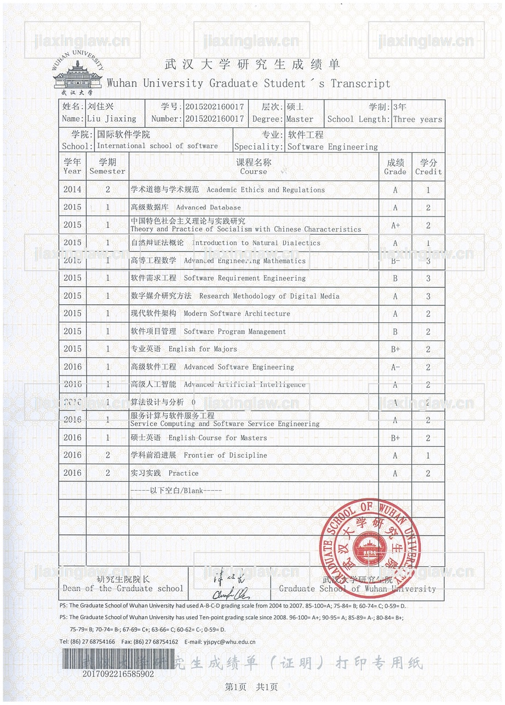
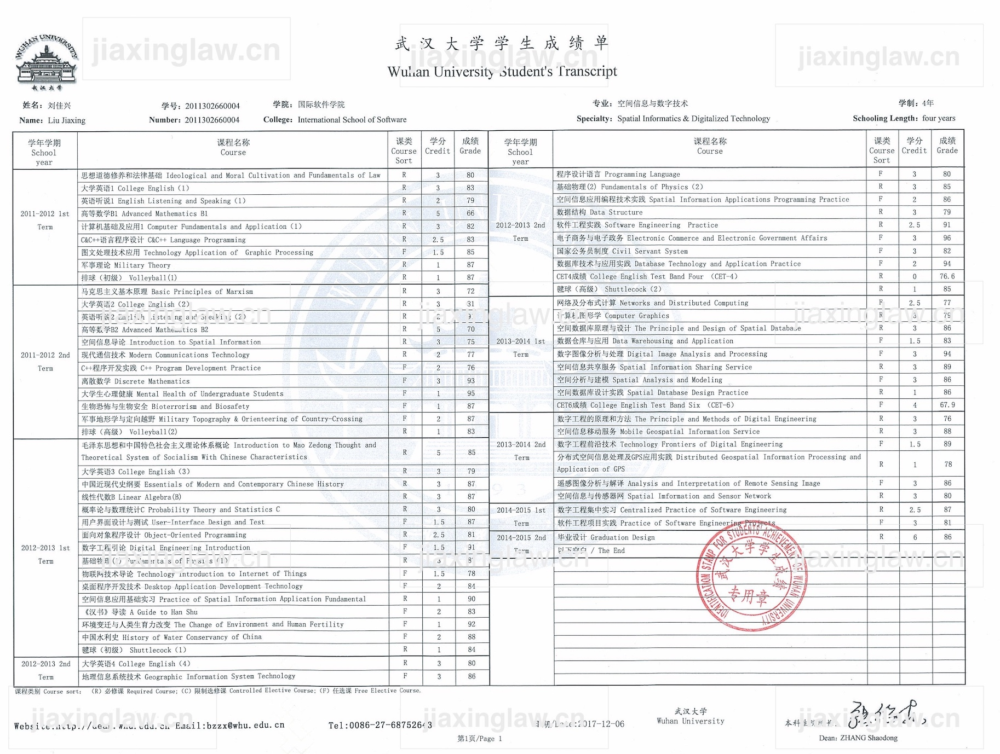
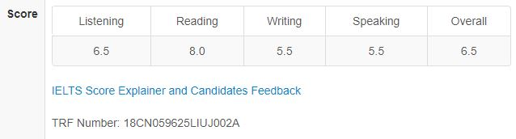
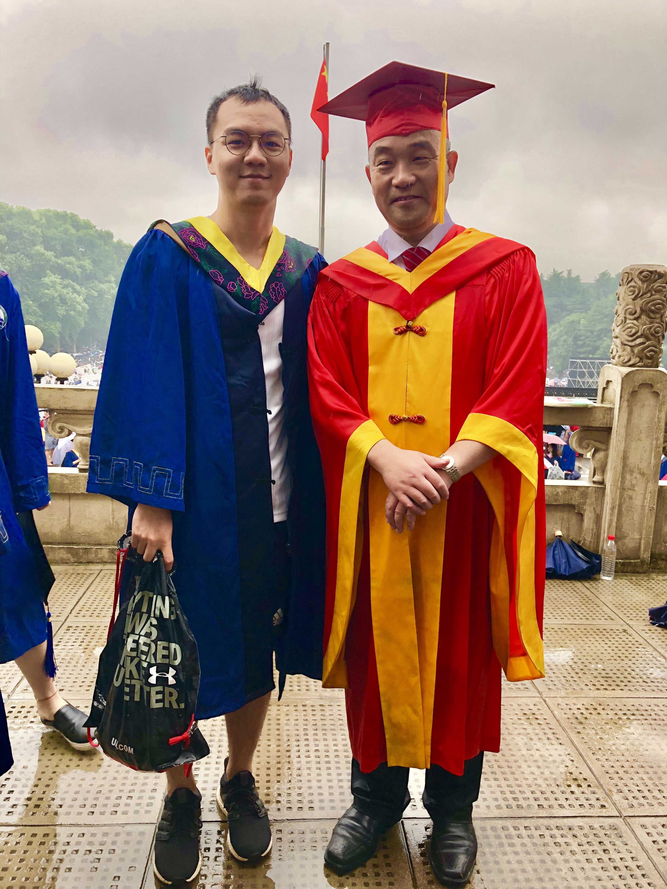
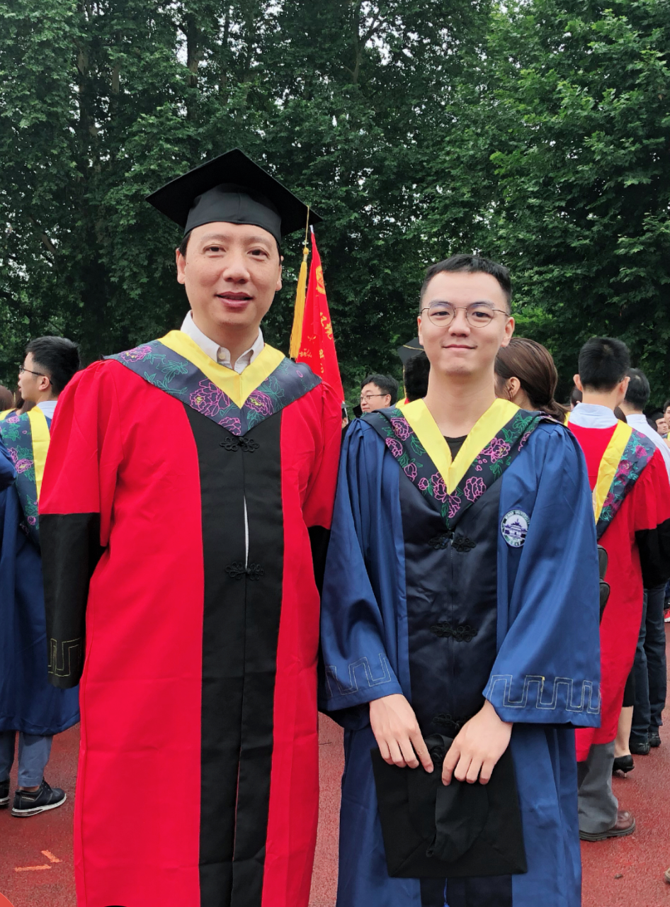
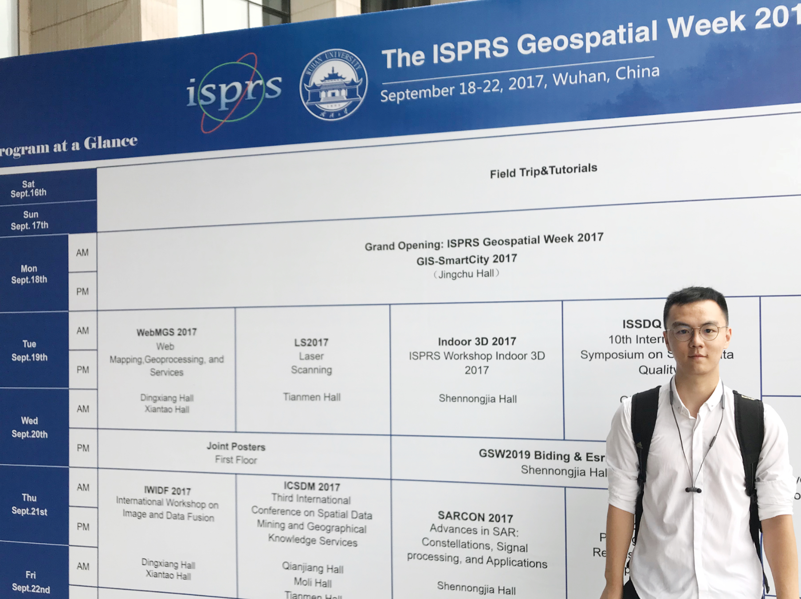

During my graduate studies, my research focuses on indoor localization based on magnetic field with
the instruction
of the Prof.Congshi Jiang,
including design & develop an indoor localization system, and research on geomagnetic matching algorithms & location
fingerprint.
My research published on The ISPRS Geospatial Week
2017, and was selected for a poster presentation, I am an outstanding graduate of
the School of Remote Sensing and Information Engineering.
During undergraduate studies,I participate in internships or training every summer, I also joined BDCCL(Big Data
and Cloud Computing Lab),
my research focuses on design and implementation of Cloud Storage Platform. Specifically,storage and processing of
remote sensing data based on Openstack and Hadoop, with the direction of Prof.Xiaohui Cui(Dean of International
School of Software, Wuhan University).
I got a second Bachelor’s degree in Finance and have experience in student union.
CONTACT ADDRESS
Wechat/QQ: 524333009
Email: jiaxing@whu.edu.cn/ jiaxinglaw@qq.com
Skype: live:jiaxinglaw
EDUCATION
Sept. 2011-June.2015
International School of Software, Majoring in Spatial Informaticas & Digitalized Technology,
Wuhan University,
Bachelor of Engineering.
Minored in Finance, Economics and Management School , Wuhan University.
Sept.2015-June.2018
International School of Software/School of Remote Sensing and Information Engineering, Majoring in Software Engineering, Graduate School of Wuhan University, Master
of Engineering.
Intern of “Yinxing” project, China UnionPay, Information Center, Shanghai, July 2017 to Sept 2017
Design & develop a management system of DBaaS (with JavaScript, Html5 and Spring)
Participated on a team to maintain and manage the database of Union payment system
Worked closely with the teammate and DBA to understand the requirements and perform the system design
Intern in Neusoft, Dalian, July 2014 to Aug 2014
Training in Java Language and Java Web
Participated on a development team to design and develop a railway ticket-selling website
Some of my projects.
An Indoor Localization System Using Magnetic Field Based on Smartphone, 2015
Client:Android; Server:Java
Algorithm Design, including matching algorithm, filter algorithm
I finished this system independently, under the guidance of Prof.Jiang
With a Computer Software Copyright(2017R11L320741), patent-pending
A Cloud Storage Platform Based on Geographic Information with a Downloader Support Breakpoint Resume, 2014
Hadoop+HDFS+OpenCV+GDAL+Java
Design Algorithm of Map-Reduce
One of Main Developers
Downloader with Breakpoint Resume、Multithreading and Interface
A Stock Analysis Software Using Image Identification, 2015
Search and Analyze of Image Identification Algorithm
Remote Sensing Image Processing, 2014
ArcGIS+EADRS+Matlab
Under the guidance of Prof.Shuang Li
A Management System on Dentistry, 2013
ASP.NET+MVC
One of Main Developers
Analysis of Exchange rate fluctuation
EViews
Based on GARCH_CVaR Model
PAPERS
J. Liu, C. Jiang, and Z. Shi. The Design and Implementation of Indoor Localization System Using
Magnetic Field Based on Smartphone. DOI:10.5194/isprs-archives-XLII-2-W7-379-2017
(In Chinese)C. Jiang, J. Liu. An Indoor Geomagnetic Positioning System Based on Smartphone,
GNSS World of China, ISSN 1008-9268, Chinese Core Journals, DOI: 10.13442/j.gnss.1008-9268.2018.05.002.
(Abstract)J. Liu, C. Jiang. The Research on Indoor Positioning Based on Geomagnetic Field on Smartphone,
International Conference on Geo-informatics in Sustainable Ecosystem and Society, 2017.
TRANSCRIPT


IELST SCORE

ABOUT ME
Memorable moment
Photo with Xiankang Dou -the principal of Wuhan University Photo with Xiaohui Cui


Conference and Dinner with Deren Li

Hobby
Build Muscle
Jogging & Hiking & Cycling
Animals
Music
Why HongKong? I like this city that blends modern and traditional atmosphere, that has both skyscrapers and
traditional culture and customs
INTENDED AREAS OF STUDY
Comprehensive research on geography and computer science